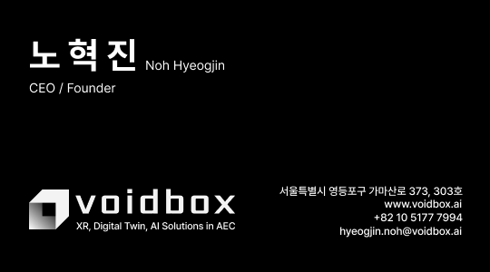
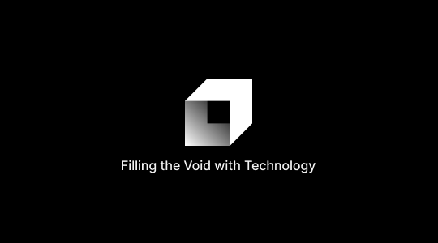
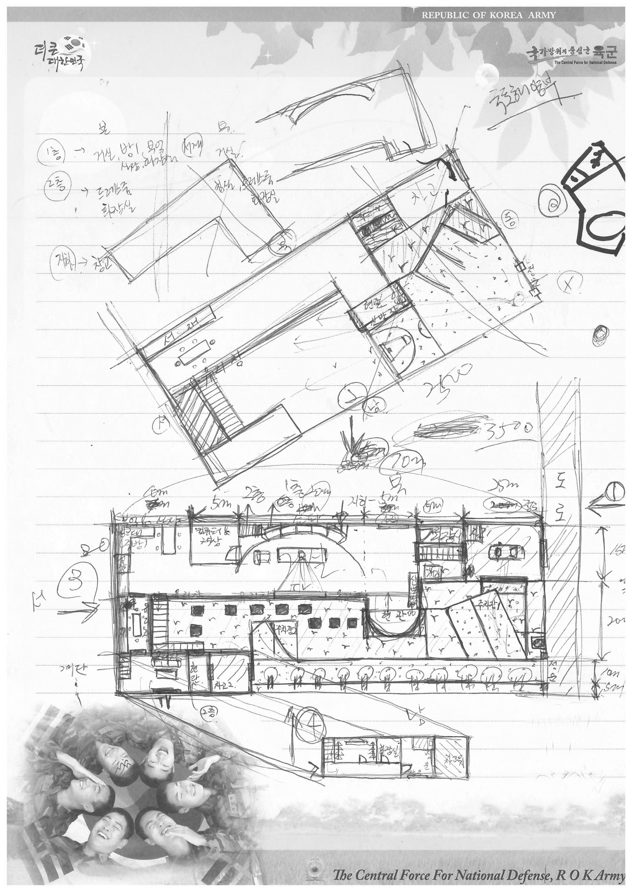

2026.05.23 · CBAS
노혁진 · CEO at voidbox


군대에 가면, 시간이 엄청나게 많아집니다.
휴대폰은 못 쓰고, 훈련소에선 누워서 잠도 못 자게 했어요.
그래서 시작한 게 —
"내가 나중에 돈을 많이 벌면 이런 집을 짓고 살아야지~"
편지지에 도면을 그리기 시작했습니다.

훈련소에서 제 옆자리 동기는 실업계 고등학교를 나와 일을 하던 친구였어요.
자격증도 있었습니다 — 전산응용건축제도기능사.
저는 자신만만하게 도면을 보여주고 물었어요.
"이 집 어때? 잘 그린 것 같아?"
돌아온 대답은,
"이건 너도 나도 할 수 있는 일이 아니야."
건축학과 학생들만큼은 아니어도, 몇 차례의 스튜디오 수업과 이론 수업들을 듣고 졸업했습니다.
그런데 꼭 — 아쉽게 먹으면 계속 배고픈 것처럼, 이왕 시작한 거 한번 끝을 보자 라는 생각이 들더라구요.
그래서 대학원에 갑니다.
감소하는 인구에 맞춰 범죄자 수를 추정하고, 교도소·구치소 수용정원을 어떤 순서·어떻게 줄일 것인가를 다룬 연구로 졸업.
알고리즘 문제를 틈틈히 풀었어요. 백준 랭킹을 적당히 유지하고 싶었거든요.
본격적으로 — CS 와 건축 지식이 만나는 자리
Revit Addin
실무에 쓰이는 Addin 을 직접 개발
ex. 도어일람표 정리 · 피난동선 분석 · 도어 방향 정렬 …
설계 자동화를 위해 프로그래밍을 하다 보니 — 바뀌는 문제 인식
AI · LLM
이미지 생성 AI 와 LLM 연구
건축설계 실무 워크플로우에 접목 시도
Autodesk Platform Service
APS (구 ACC · Forge) 를 활용한 클라우드 BIM 프로젝트
대규모 시설의 도면 PDF 변환 자동화 — 나가서 내 걸 해보자 는 생각이 굳어진 자리
주변인 (周邊人)
"둘 이상의 이질적인 사회나 문화에 동시에 속해 있으면서도 그 경계에 위치하여 어느 한 곳에서도 완전히 소속되지 못하고 심리적 갈등이나 불안정을 느끼는 사람."
군대 다녀와서 건축을 시작한 이후로 10년 — 주변인이라는 단어만큼 제 마음을 잘 설명하는 단어를 아직 못 만났습니다.
마치 — AND가 되고 싶은 XOR 같은 기분이랄까요.
제가 컴퓨터를 전공했다고 하면, 사람들은 제 설계가
"파도가 굽이치는 파라메트릭 디자인"
일 거라고 생각하더라구요.
그래서 괜히 더 청개구리 심보로 — 악착같이 Grasshopper를 외면하고 사용하지 않기도 했어요. ㅋㅋ
남들이 짐을 지웠다기보다는, 혼자 괜히 찔려서 그랬을지도 모릅니다.
직장을 그만두고 voidbox라는 회사를 시작하고 나니,
우리 회사의 정체성이 결국 — 이 고민의 끝에서 나온 결과물이 아닐까, 라고 생각해 봅니다.
이제부터는 회사 이야기를 해볼게요. →
— 열심히 실패하는 중입니다 —
Igloo에서 다시 잡은 XR 개발 감각 — 그걸 들고 우리가 덤벼본 시장은,
버추얼 스트리머 (버튜버) 시장이었어요.
네이버 D2 Startup Factory에 투자 제안을 했고,
대차게 까였습니다.
하지만 여기서 얻은 게 있었어요 —
어렴풋이 정의만 해두었던 머릿속의 지향점을, 이제 말로 설명할 수 있게 됐다는 것.
현실공간과 가상공간을
높은 정합성으로 겹쳐둘 순 없을까?
메타버스도, 디지털 트윈도 아닌 — 또 다른 무언가
현실 ↔ 대안 공간
현실 → 거울 공간
현실 ∥ 가상
— 인과적 결합 —
"공간동기화는 두 공간 사이의 인과적 결합 (causal coupling) 이다." — voidbox
세상에는 두 종류의 공간이 있는 것 같아요.
지어지지 않은 공간
→ 3D 모델링으로 가상공간을 만든다
설계자가 매일 하는 일
이미 지어진 공간
→ ?
이걸 어떻게 데이터로 옮길까?
건축하는 입장 — 특히 설계하는 입장에서는 unBuilt에 대한 생각을 많이 할 수밖에 없습니다. 그런데 Built 쪽도 누가 풀어야 합니다.
이미 지어진 공간을 디지털화하는 기술은 여럿입니다 —
대표적으로 LiDAR 기반 3D 스캐닝.
여러 기술을 탐색한 끝에 우리가 고른 것은
3D Gaussian Splatting (3DGS)
Kerbl et al., "3D Gaussian Splatting for Real-Time Radiance Field Rendering", SIGGRAPH 2023.
지향점이 생기고 나니 — "넓은 시장으로 가자" 하면서 기웃거리기 시작합니다.
진정한 공간동기화는 아직 불가능하니까,
먼저 "매물을 보여주는 것" 부터 하자.
"이 기능이 진짜 필요한가?" 를 빨리 확인하기 위해,
실제 동작하지 않는 진입점
— Fakedoor — 를 설계하고 시장의 반응을 봤습니다.
기술과 비즈니스 사이의 줄다리기 — 좋은 아이디어를 발산시키기보다, 핵심 아이디어를 하나로 수렴시키고 검증해보자.
건축공학과 졸업전시 아카이빙 프로젝트 MoU
연세대학교 신촌캠퍼스 · 백양누리
지금까지의 3DGS — 공간을 남긴다.
그런데 졸업전시에서 우리가 마주한 질문은,
"공간은 보존된다.
그러나 사건은?"
발표 · 우연한 만남 · 오후의 빛 ·
작품 앞에서 누군가가 멈춰 선 5분.
Diana Taylor, The Archive and the Repertoire, Duke UP, 2003.
3DGS는 본성상 아카이브 매체인데,
레퍼토리를 얹어볼 순 없을까?
동시에 진행되는 물리·가상 전시를 하나의 사건으로 묶을 수 있는가?
라이브 스트림은 비대칭 구조 — 두 공간이 공동 저자가 되는 구조는?
아카이브가 단순한 기념물이 아니라 계속되는 사건의 장이 되려면?
우리는 아카이브는 잘 만들지만 레퍼토리는 잃어버린다.
우리의 공간동기화는 1:1 지도를 완성하는가, 폐기하는가,
그 우화 바깥의 새 범주인가?
"우리의 지도는 무엇을 선택하는가?"
전시는 끝나고 — 그 자리에는 무엇이 남는가?
대형 졸업작품 모형들.
전시 마지막 날, 학생들이 마주하는 현실 —
그렇다면 — 모형을 스캔으로 남겨드리면?
아카이빙의 두 번째 의미 — 사라지는 것을 데이터로 붙잡아두는 일.
무엇이든 물어보세요.
노혁진 · Founder, voidbox
hyeogjin.noh@voidbox.ai
voidbox.ai · nubim.voidbox.ai
📷 voidbox Instagram 팔로우 부탁드립니다.
🎓 곧 다가올 연세대 · 서울대 졸업전시를 보시게 된다면,
voidbox와 함께하는 온라인 전시도 많이 찾아와 주세요!